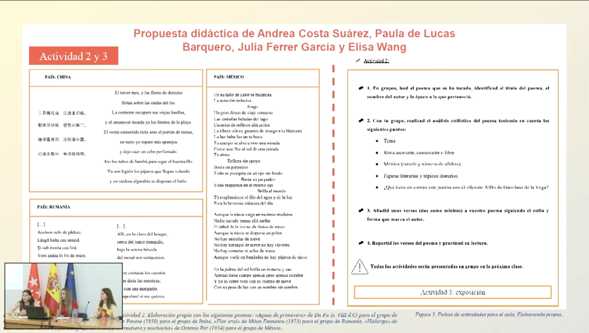

XIV Encuentro de Innovación en Docencia Universitaria (EIDU)
Fernández López, M.ª C., de las Fuentes Gutiérrez, E., De Lucas Barquero, P. & Vera Díaz, P. 2022. La incorporación de las soft skills a la formación del docente de español para inmigrantes: propuestas y resoluciones didácticas. XIV Encuentro de Innovación en Docencia Universitaria (EIDU) , University of Alcalá. June 1–2.